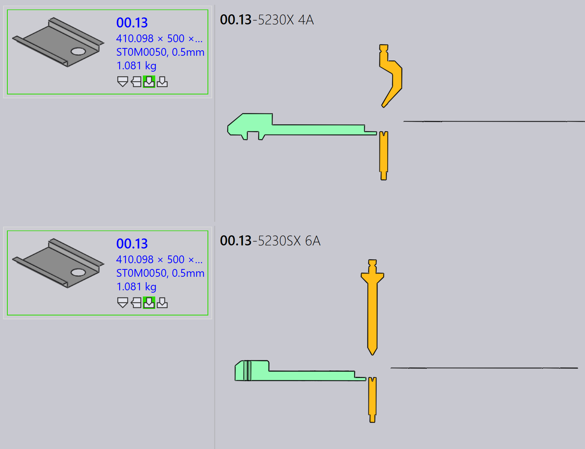

Klargøringspanel
Dette afsnit forklarer klargøringsrelaterede handlinger såsom Export outputs, Check Tooling, Suppress Tooling, Set as Base-Flat…, Copy Tooling og andre muligheder, der bruges til at håndtere klargøringsinstanser.

|
|
Export Outputs
Denne mulighed eksporterer deloutputtet til den destination, der er konfigureret i Factory Settings. (Se Bukkeindstillinger og Skæreindstillinger)
Kun de klargøringer, der er tilknyttet den valgte klargøringsoperation, eksporteres, ikke hele delen.
| De eksporterede filer afhænger af operationstypen. For Bend- og Fold-operationer genereres NC-filer og rapporter. For Cut- og Punch- operationer eksporteres kun delfilerne. |
Check Tooling
-
Hvis der er en ændring i CAM Settings, eller et bukkeværktøj mistes, behøver du ikke at genklargøre delen.
-
Brug i stedet Check Tooling til at validere den eksisterende klargøring uden at foretage ændringer.
-
Hvis valideringen mislykkes, opdateres klargøringsstatussen for den instans, og de relaterede outputfiler fjernes.
-
Check Tooling registrerer også dele, hvor fejl tidligere blev manuelt tilsidesat ved hjælp af Ignore Errors, og opdaterer deres status til fejl om nødvendigt.
Copy tooling
Kopier klargøring giver dig mulighed for hurtigt at anvende bukkeklargøring fra én løsning på andre, hvilket sparer tid og indsats.
Dette kopierer stempel-, sekvens- og baganslåsopsætningen fra en valgt reference- klargøring (løsning) og forsøger at anvende de samme indstillinger på alle andre løsninger.
-
Hvis den kopierede opsætning er mulig for en målmaskine, gemmes og bruges den.
-
Hvis opsætningen ikke er mulig, forbliver den oprindelige klargøring for den maskine uændret.
For eksempel kan du have forskellig klargøring for forskellige maskiner:
-
Her bruger Machine 5230X 4A et Gåsehals-stempel, Machine 5230SX 6A bruger et Spidst stempel.

Når du bruger Copy Tooling… på Machine 5230X 4A, forsøger den at kopiere Gåsehals-opsætningen til alle andre maskiner.

De samme stempel-, sekvens- og baganslåsindstillinger anvendes, hvor det er muligt. Hvis den kopierede opsætning ikke kan bruges, forbliver den oprindelige klargøring uændret.

Efter anvendelse af kopier klargøring er Gåsehals-opsætningen blevet anvendt med succes på alle andre maskiner, hvor det er muligt.
Set as Base-Flat…
Set as Base-Flat…-funktionen definerer, hvilken buk- eller fals- klargøring der bruges som reference-fladstørrelse til generering af skæreløsninger. Når en klargøring markeres som Base-Flat, opdaterer TruSmartCAM delens fladstørrelse baseret på den maskine og regenererer skæreløsninger i overensstemmelse hermed. Base-Flat- klargøringer vises med en blå kant i brugergrænsefladen.
Forskellige bukkemaskiner kan producere små variationer i fladstørrelse for den samme del. Når du indstiller en klargøring som Base-Flat, bruger TruSmartCAM den maskines fladstørrelse som masterreference og genberegner automatisk skære- løsningerne.
Her kan vi se forskellige fladstørrelser for den samme del på tværs af forskellige maskiner:

I dette eksempel er 5230X 4A-klargøringen indstillet som Base-Flat, og den opdaterede fladstørrelse anvendes i delegenskaberne:

Automatisk base-flat-valg
Når fabriksindstillingen Apply flat correction during bending er aktiveret:

-
TruSmartCAM indstiller automatisk bukkeklargøringen (der indeholder tabellen for maks. bukkelængde) som Base-Flat under delimport.
-
Hvis den valgte bukkeklargøring støder på en fejl eller ikke er mulig, skifter TruSmartCAM intelligent og indstiller en anden gyldig bukkeklargøring som Base-Flat. Dette sikrer, at fladstørrelsesreferencen og skæreløsningerne altid forbliver konsistente og gyldige uden manuel indgriben.
Forbedret base-flat-håndtering
TruSmartCAM tilbyder Base-Flat-muligheder i Save to Praxis- dialogen ved gemning af buk- eller falsklargøringsredigeringer. Disse muligheder vises kun for klargøringer i OK-status og sikrer, at fladstørrelse og skæreløsninger forbliver nøjagtige.
Set as Base-Flat and calculate cutting solution
Denne mulighed bruges til at markere en klargøring som Base-Flat for første gang og automatisk generere den tilsvarende skæreløsning.
Vises, når:
-
Klargøringen er ikke aktuelt markeret som Base-Flat.
-
Brugeren har tjekket klargøringen ud til redigering og gemmer ændringerne.

For at bruge denne mulighed skal du tjekke buk- eller falsklargøringen ud og foretage de nødvendige ændringer, såsom ændringer af bukkeparametre eller fladstørrelse. Tryk på Ctrl+S for at gemme ændringerne. I Save to Praxis- dialogen, vælg Set as Base-Flat and calculate cutting solution og klik på OK. TruSmartCAM vil indstille klargøringen som Base-Flat og generere skæreløsningen ved hjælp af den opdaterede fladstørrelse.
Update the base-flat and re-calculate cutting solution
Denne mulighed bruges, når klargøringen allerede er markeret som Base-Flat og er blevet redigeret, hvilket kræver, at fladstørrelsen og skæreløsningerne regenereres.
Vises, når:
-
Klargøringen er allerede markeret som Base-Flat.
-
Brugeren har tjekket den ud, redigeret den og gemmer ændringerne.

Ved redigering af den eksisterende Base-Flat-klargøring, opdater bukkeparametrene eller fladstørrelsesgeometrien efter behov. I Save to Praxis-dialogen, vælg Update the base-flat and re-calculate cutting solution. TruSmartCAM vil derefter opdatere Base-Flat-klargøringen og regenerere alle relaterede skæreløsninger for at afspejle de seneste ændringer.
|
Kun én bukkeklargøring kan indstilles som Base-Flat ad gangen. Når Base-Flat ændres, genbehandles eksisterende skæreløsninger automatisk. Denne funktion er tilgængelig for både buk- og falsklargøringer i TruSmartCAM. |
Re-tool
Denne mulighed genbehandler den valgte klargøring for delen.
Højreklik på den ønskede klargøring i Tooling-panelet og klik på Re-tool…
En bekræftelsesdialog vises, før der fortsættes.

Klik på Yes for at fortsætte med genklargøring, eller No for at annullere operationen.
Kun den valgte klargøring genklargøres. Andre klargøringer tilknyttet delen påvirkes ikke. De eksisterende outputs relateret til den valgte klargøring fjernes og regenereres under genklargøringsprocessen.
Brug denne mulighed, når klargøringsdata er forældede, forkerte, eller når der foretages ændringer i maskin- eller klargøringskonfigurationer.
Ignore errors
-
Hvis en klargjort instans viser en advarsel, og du stadig vil fortsætte med den, kan du tilsidesætte advarslen ved at klikke på Ignore errors.
-
Dette vil give systemet mulighed for at eksportere outputfiler for den instans, selv hvis der var klargøringsproblemer.
| Brug Ignore Errors kun, når du er sikker på, at advarslen sikkert kan ignoreres. Tilsidesættelse af faktiske fejl kan føre til maskinskade eller sikkerhedsrisici. |
Undertryk/Ophæv undertrykkelse af klargøring
-
Når en maskine er inaktiv, eller du ikke vil have en bestemt del behandlet af en bestemt maskine, brug Suppress Tooling til at udelukke den del fra indlejring på den maskine.
-
Efter undertrykkelse viser musen over den klargjorte instans en meddelelse som: “Tooling suppressed by <User name> on <Date Time>”.
-
Undertryk klargøring fjerner outputfilen for den maskine og del.
-
Brug Unsuppress tooling til at gendanne klargørings- statussen for delen på den maskine.
-
Når undertrykkelsen ophæves, genereres den respektive outputfil igen.